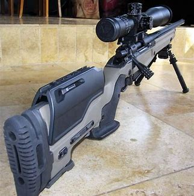

This is tied for the second most important part of long range shooting.
A good build gives you one of the tools needed to reach a long distance.
Using a rifle that has good parts and a precision barrel can make an amateur shooter into a good shooter.
Having a rifle that isn't to light and not to heavy really helps and varies by person.
You must also choose a good caliber that fits you and won't have to much recoil for the shooter.
Having a good muzzle brake on the end will also drop recoil by a lot, allowing you to stay on target.
You need a good build to hit from a distance.

Back
Home
Next